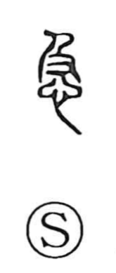

急

Kun: isogu, sumiyaka | On: kyuu
urgent ・ to hurry ・ swift ・ sudden
Explanation
急 adds 心, the heart, to a form of 及 as its sound element. 及 shows a hand reaching from behind to catch a person ahead. It means reaching or overtaking.
急 is the state of mind of someone trying to catch up: the heart presses forward, impatient to close the distance. This gives ‘hurry,’ ‘swift,’ and ‘urgent.’ The intensity can also become severity or a strained, restless condition.
A matter that presses on the heart cannot be left waiting. 急 consequently describes an emergency or an important need requiring immediate action. Physical pursuit supplies the image for both speed and inward urgency.